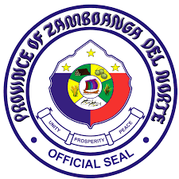

|  |
Province Of Zamboanga del norte |
Long before the Spanish colonizers came to the country, Zamboanga del Norte was already the “peaceful paradi se” of the shy and timid Subanons who lived along river or “suba” banks in the province. They fished, hunted and planted crops for food, and hand-wove their own clothing out of plant fibers. The first recorded Visayan settlement came in 1563. Some 800 families from Bohol headed by Chieftain Pagbuaya escaped from the “treacherous” ternatans and landed in Dapitan. Two years later, a Spanish expedition led by Legaspi and Urdaneta landed in Dapitan and were received hospitably by Pagbuaya. In due time, Dapitan became a Christian stronghold in Mindanao. In 1607, some 200 natives became formal converts to Christianity. By 1631, a permanent Christian Mission was established in Dapitan. Like many other places in Mindanao, after the cross, came the sword. Zamboanga del Norte was occupied by the Spaniards through Dapitan in the north and Siocon in the south, where an old Spanish fort atop a hill beside the sea still stands today, Port Santa Maria, a natural harbor. This was established to stop marauding pirates from proceeding farther north. The late Dr. Jose P. Rizal, the country’s national hero, arrived in Dapitan on July 17, 1892, to begin his four-year exile. He left the place on July 31, 1896. On December only to meet his death the same year at Bagumbayan. The arrival of the Americans created the new Provincia Mora in 1903. the northern area of Zamboanga del Norte was separated from the sub-province with the municipality of Zamboanga (now a city) as capital. Duringthe World War 11, the seat of Zamboanga provincial government was transferred from Zamboanga to Dipolog.
Six years later, it became evident during the period of reconstruction and rehabilitation that governing the entire 16,532 square kilometers of the Zamboanga peninsula was a gargantuan task for any administrator. And so, June 6, 1952, the huge Zamboanga province was divided into two (2) provinces, namely, Zamboanga del Norte and Zamboanga del Sur with Dipolog City and Pagadian City as the capital, respectively, by virtue of Republic Act 711 which was enacted into law by late President Elpidio Quirino. R.A. 711 was authored by the late Congressman Roselier T. Lim.